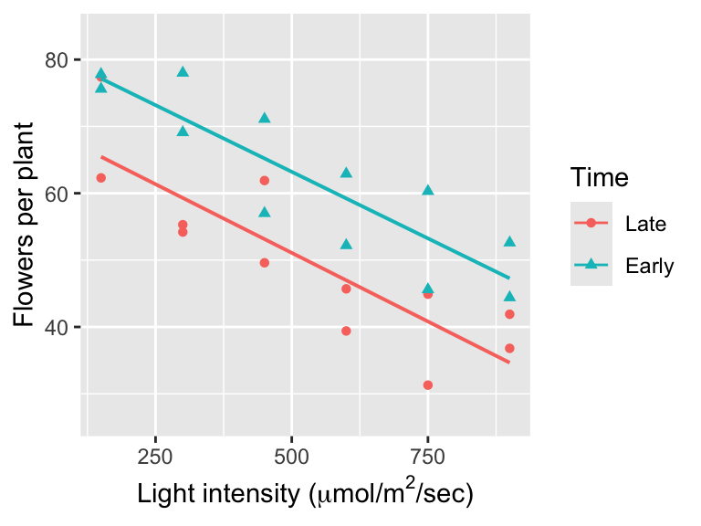
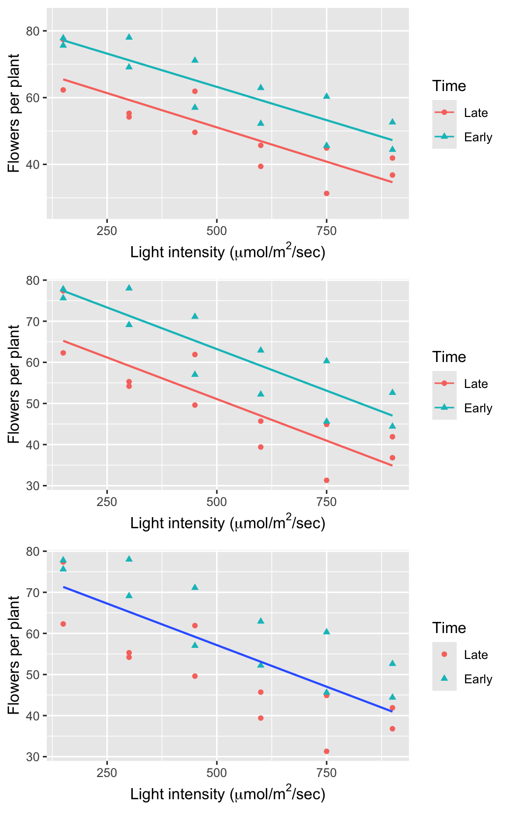
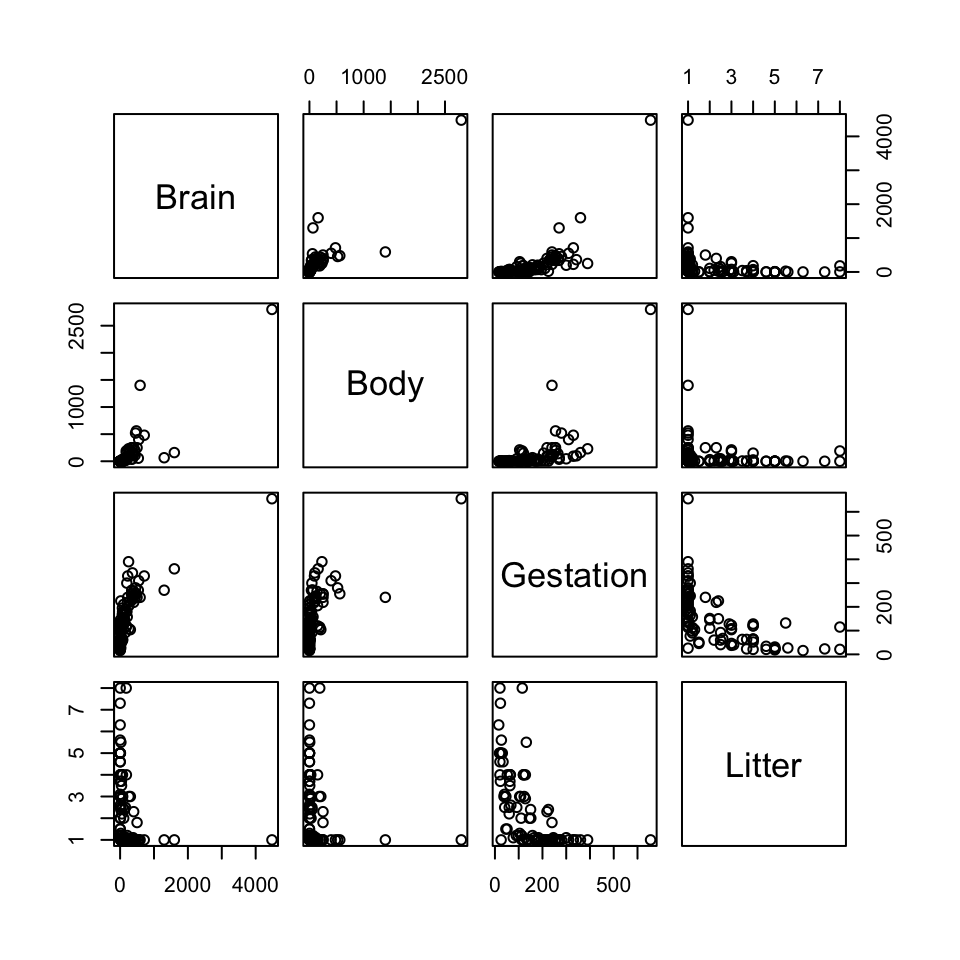
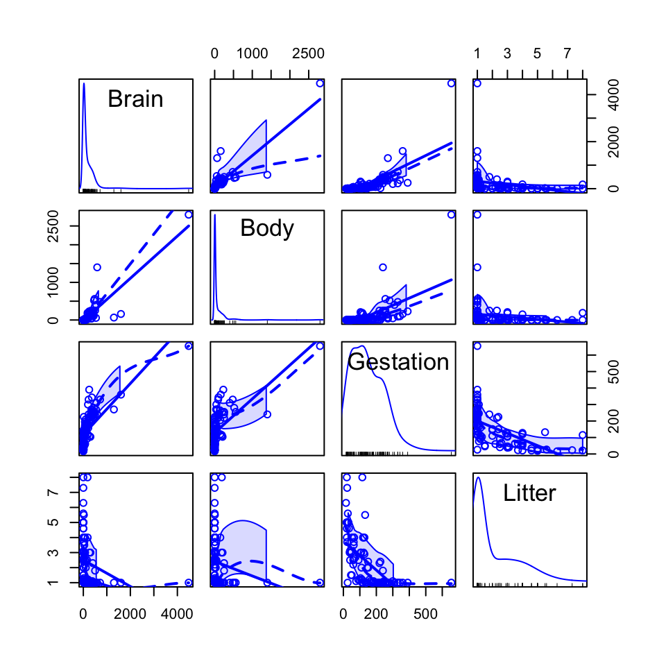
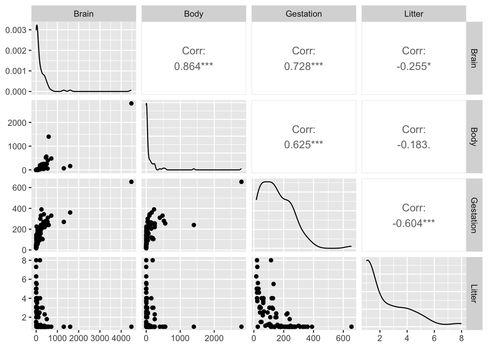
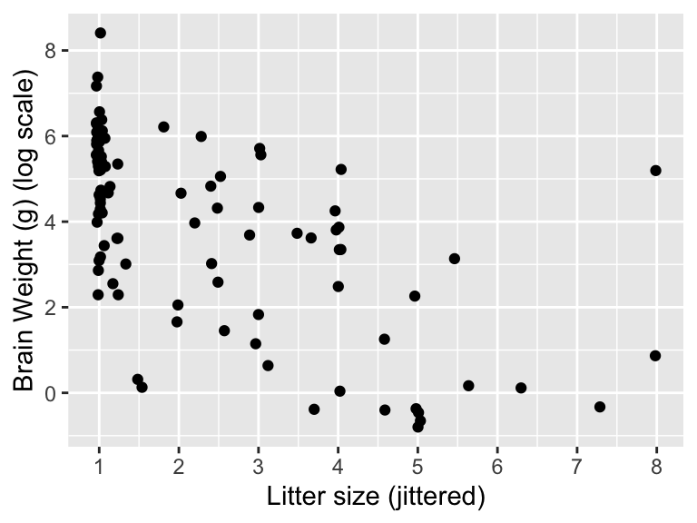
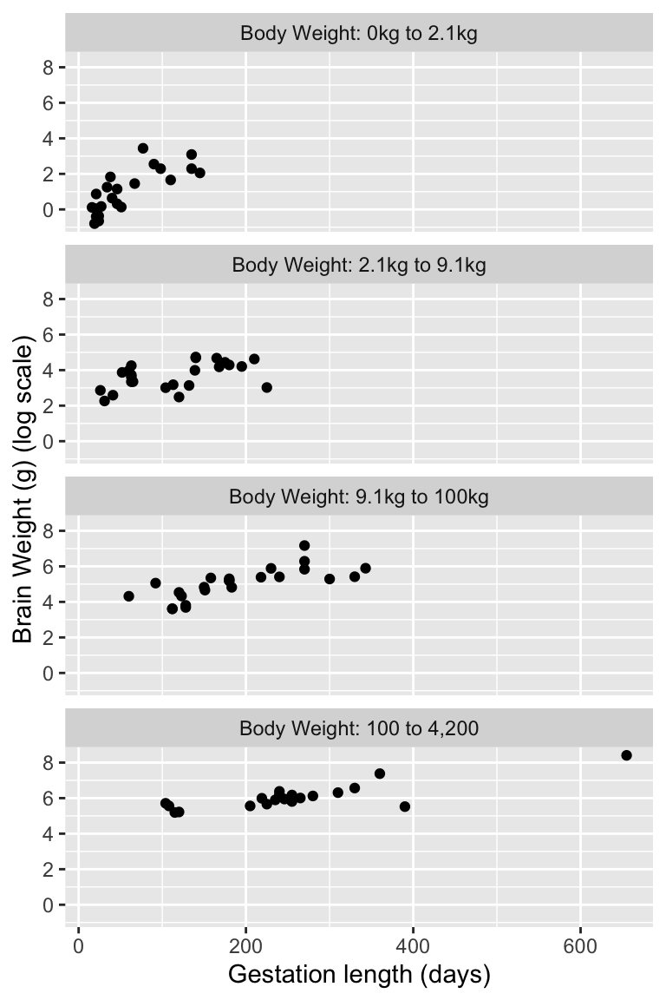

library(ggformula) # graphics
library(Sleuth3) # Sleuth data sets
library(broom) # extract pieces of lm output
library(gridExtra) # arrange multiple plots on a page5 Multiple Regression
In this chapter we need to load the following packages (remember, you will need to install packages you have never used before if you are using your own computer).
We will also set some options to improve legibility of graphs and output.
options(digits=4) # display four significant digits by default6 Effects of light on meadowfoam flowering
Do different amounts of light affect the growth of meadowfoam (a small plant used to create seed oil)? This is the question addressed in case study 9.1 in the Sleuth.
6.1 Data coding, summary statistics and graphical display
We begin by reading the data.
head(case0901) Flowers Time Intensity
1 62.3 1 150
2 77.4 1 150
3 55.3 1 300
4 54.2 1 300
5 49.6 1 450
6 61.9 1 450The original data set codes the Time variable as 1 = Late and 2 = Early. The code chunk below changes Time to a factor with informative labels (rather than using the original numeric labels) and obtains overall summaries of each variable.
case0901 <- mutate(case0901, Time = factor(Time, labels = c("Late", "Early")))
summary(case0901) Flowers Time Intensity
Min. :31.3 Late :12 Min. :150
1st Qu.:45.4 Early:12 1st Qu.:300
Median :54.8 Median :525
Mean :56.1 Mean :525
3rd Qu.:64.5 3rd Qu.:750
Max. :78.0 Max. :900 A total of 24 meadowfoam plants were included in this data. There were 12 treatment groups: 6 light intensities at each of the 2 timing levels (Display 9.2, page 239 of the Sleuth). The following code generates the scatterplot of the average number of flowers per plant versus the applied light intensity for each of the 12 experimental units akin to Display 9.3 on page 240.
gf_point(Flowers ~ Intensity, data = case0901, color = ~Time, shape = ~Time) %>%
gf_lm() %>%
gf_labs(x = expression(paste("Light intensity (", mu, "mol/", m^{2},"/sec)")),
y = "Flowers per plant")Warning: Using the `size` aesthetic with geom_line was deprecated in ggplot2 3.4.0.
ℹ Please use the `linewidth` aesthetic instead.
6.2 Multiple linear regression model
We next fit a multiple linear regression model that specifies parallel regression lines for the mean number of flowers as a function of light intensity as interpreted on page 239.
lm1 <- lm(Flowers ~ Intensity + Time, data = case0901)
summary(lm1)
Call:
lm(formula = Flowers ~ Intensity + Time, data = case0901)
Residuals:
Min 1Q Median 3Q Max
-9.65 -4.14 -1.56 5.63 12.16
Coefficients:
Estimate Std. Error t value Pr(>|t|)
(Intercept) 71.30583 3.27377 21.78 6.8e-16 ***
Intensity -0.04047 0.00513 -7.89 1.0e-07 ***
TimeEarly 12.15833 2.62956 4.62 0.00015 ***
---
Signif. codes: 0 '***' 0.001 '**' 0.01 '*' 0.05 '.' 0.1 ' ' 1
Residual standard error: 6.44 on 21 degrees of freedom
Multiple R-squared: 0.799, Adjusted R-squared: 0.78
F-statistic: 41.8 on 2 and 21 DF, p-value: 4.79e-08We can also fit a multiple linear regression with an interaction between light intensity and timing of its initiation as shown in Display 9.14 (page 260) and interpreted on page 239. Notice that in the regression formula multiplication, i.e. Intensity * Time, specifies that both variables and their interaction should be used as explanatory variables in the model.
lm2 <- lm(Flowers ~ Intensity * Time, data = case0901)
summary(lm2)
Call:
lm(formula = Flowers ~ Intensity * Time, data = case0901)
Residuals:
Min 1Q Median 3Q Max
-9.52 -4.28 -1.42 5.47 11.94
Coefficients:
Estimate Std. Error t value Pr(>|t|)
(Intercept) 71.62333 4.34330 16.49 4.1e-13 ***
Intensity -0.04108 0.00744 -5.52 2.1e-05 ***
TimeEarly 11.52333 6.14236 1.88 0.075 .
Intensity:TimeEarly 0.00121 0.01051 0.12 0.910
---
Signif. codes: 0 '***' 0.001 '**' 0.01 '*' 0.05 '.' 0.1 ' ' 1
Residual standard error: 6.6 on 20 degrees of freedom
Multiple R-squared: 0.799, Adjusted R-squared: 0.769
F-statistic: 26.5 on 3 and 20 DF, p-value: 3.55e-07We can graphically display these models as shown in Display 9.8 (page 251).
equal_line <- gf_point(Flowers ~ Intensity, data = case0901, color = ~Time, shape = ~Time) %>%
gf_lm(Flowers ~ Intensity, data = case0901, inherit = FALSE) %>%
gf_labs(x = expression(paste("Light intensity (", mu, "mol/", m^{2},"/sec)")),
y = "Flowers per plant")
aug_lm1 <- augment(lm1)
parallel_lines <- gf_point(Flowers ~ Intensity, data = case0901, color = ~Time, shape = ~Time) %>%
gf_lm(.fitted ~ Intensity, data = aug_lm1) %>%
gf_labs(x = expression(paste("Light intensity (", mu, "mol/", m^{2},"/sec)")),
y = "Flowers per plant")
separate_lines <- gf_point(Flowers ~ Intensity, data = case0901, color = ~Time, shape = ~Time) %>%
gf_lm() %>%
gf_labs(x = expression(paste("Light intensity (", mu, "mol/", m^{2},"/sec)")),
y = "Flowers per plant")
grid.arrange(separate_lines, parallel_lines, equal_line, ncol = 1)
7 Why do some mammals have large brains?
What characteristics predict large brains in mammals? This is the question addressed in case study 9.2 in the Sleuth. We begin by reading the data and summarizing the variables.
summary(case0902) Species Brain Body Gestation Litter
Aardvark : 1 Min. : 0.45 Min. : 0.017 Min. : 16 Min. :1.00
Acouchis : 1 1st Qu.: 12.60 1st Qu.: 2.075 1st Qu.: 63 1st Qu.:1.00
African elephant: 1 Median : 74.00 Median : 8.900 Median :134 Median :1.20
Agoutis : 1 Mean : 218.98 Mean : 108.328 Mean :151 Mean :2.31
Axis deer : 1 3rd Qu.: 260.00 3rd Qu.: 94.750 3rd Qu.:226 3rd Qu.:3.20
Badger : 1 Max. :4480.00 Max. :2800.000 Max. :655 Max. :8.00
(Other) :90 A total of 96 mammals were included in this data. The average values of brain weight, body weight, gestation length, and litter size for each of the species were calculated and presented in Display 9.4 (page 241 of the Sleuth).
7.1 Graphical presentation
The following displays a simple (unadorned) pairs plot, similar to Display 9.10 on page 255.
pairs(Brain ~ Body + Gestation + Litter, data = case0902)
Fancier options are available. If you install the car package, then you can use the scatterplotMatrix() command (notice the difference in the formula syntax):
library(car)
scatterplotMatrix(~Brain + Body + Gestation + Litter, data = case0902)
By default both a smoother and a regression line are drawn by scatterplotMatrix(), to omit these add the arguments smooth = FALSE and/or regLine = FALSE. For more information about customizations, see the help menu for the function.
Finally, you can render ggplot2-style scatterplot matrices via the ggpairs function in the GGally package.
library(GGally)
ggpairs(data = case0902, columns = c("Brain", "Body", "Gestation", "Litter"))
The following displays a jittered scatterplot of log brain weight as a function of log litter size, similar to Display 9.12 on page 258.
gf_jitter(log(Brain) ~ Litter, data = case0902) %>%
gf_labs(x = "Litter size (jittered)", y = "Brain Weight (g) (log scale)") %>%
gf_refine(scale_x_continuous(breaks = 1:8))
The following displays a jittered scatterplot using the original data stratified by body weight on a log-transformed axis, similar to Display 9.13 on page 259.
case0902 <- mutate(case0902,
weightcut = cut(Body, breaks = c(0, 2.1, 9.1, 100, 4200),
labels = c("Body Weight: 0kg to 2.1kg",
"Body Weight: 2.1kg to 9.1kg",
"Body Weight: 9.1kg to 100kg",
"Body Weight: 100 to 4,200")))
gf_point(log(Brain) ~ Gestation, data = case0902) %>%
gf_facet_wrap(~weightcut, ncol = 1) %>%
gf_labs(x = "Gestation length (days)", y = "Brain Weight (g) (log scale)")
7.2 Multiple linear regression model
The following model is interpreted on page 240 and shown in Display 9.15 (page 260).
lm3 <- lm(log(Brain) ~ log(Body) + log(Gestation) + log(Litter), data = case0902)
summary(lm3)
Call:
lm(formula = log(Brain) ~ log(Body) + log(Gestation) + log(Litter),
data = case0902)
Residuals:
Min 1Q Median 3Q Max
-0.9541 -0.2964 -0.0311 0.2811 1.5749
Coefficients:
Estimate Std. Error t value Pr(>|t|)
(Intercept) 0.8548 0.6617 1.29 0.1996
log(Body) 0.5751 0.0326 17.65 <2e-16 ***
log(Gestation) 0.4179 0.1408 2.97 0.0038 **
log(Litter) -0.3101 0.1159 -2.67 0.0089 **
---
Signif. codes: 0 '***' 0.001 '**' 0.01 '*' 0.05 '.' 0.1 ' ' 1
Residual standard error: 0.475 on 92 degrees of freedom
Multiple R-squared: 0.954, Adjusted R-squared: 0.952
F-statistic: 632 on 3 and 92 DF, p-value: <2e-16